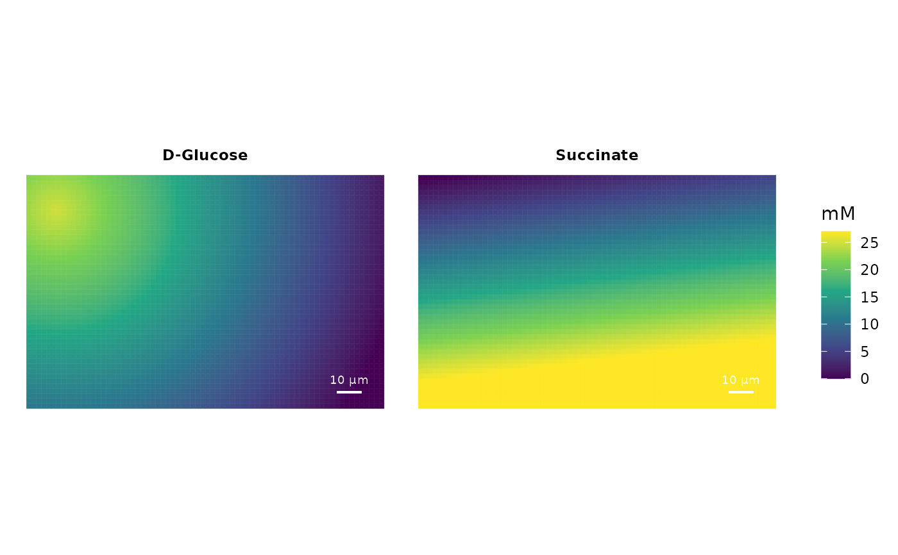

Add compounds to the growth environment in a gradient
Source:R/growthSimulation.R
add_compound_gradient.RdThe function can be used to add substances to the growth environment where the compound is distribution in a concentration gradient.
Usage
add_compound_gradient(
object,
compound,
p1,
p2,
c1,
c2,
gradient.dir = "radial",
compound.name = NULL,
is.constant = FALSE,
compound.D = 75
)Arguments
- object
S4-object of type growthSimulation.
- compound
Character with the compound ID of substance to add to the environment in a gradient. Compound ID should correspond to the models' exchange reaction ID ("EX_[cpdid]"), without the "EX_" prefix.
- p1
Numeric vector of length 2 or 3 defining the xy(z)-coordinates of the first gradient reference point. See details.
- p2
Numeric vector of length 2 or 3 defining the xy(z)-coordinates of the second gradient reference point. See details.
- c1
Numeric value with the concentration of the compound at 'p1'. Values in mM.
- c2
Numeric value with the concentration of the compound at 'p2'. Values in mM.
- gradient.dir
Either "radial", "linear", or "linear_mirrored". See details.
- compound.name
Character with the compound name.
- is.constant
Logical defining if the compound should remain constant over time despite of potential uptake or production by cells.
- compound.D
Numeric value with the compound's diffusion coefficient in \(\mu\)m^2/s. Default: 75
Value
Return a S4-object of type growthSimulation.
Details
If only xy-coordinated are provided the z-coordinate is assumed to be 0.
If ''gradient.dir' is set to "linear", any point that is in the opposite direction of the gradient will get the concentration c1. If "linear_mirrored", the concentration gradient is mirrored at the plane that is defined by p1 and the p1-p2 as normal vector.
If the compound is already present, old and new concentrations are added.
If no compound names are provided, the current names are kept (if compound is already present) or the the compound ID is also used as name (in case the compound is new).
Examples
sim <- init_simulation(cbind(c(-70, -70, 70, 70), c(-45, 45, 45, -45)),
gridFieldSize = 2, gridFieldLayers = 3)
sim <- add_compound_gradient(sim,
compound = "cpd00027_e0",
p1 = c(-60,33), p2 = c(60,-40),
c1 = 25, c2 = 0,
compound.name = "D-Glucose")
sim <- add_compound_gradient(sim,
compound = "cpd00036_e0",
p1 = c(60,-20), p2 = c(50,60),
c1 = 27, c2 = 0,
gradient.dir = "linear",
compound.name = "Succinate")
plot_environment(sim, c("cpd00027_e0","cpd00036_e0"), incl.timestamp = FALSE)
